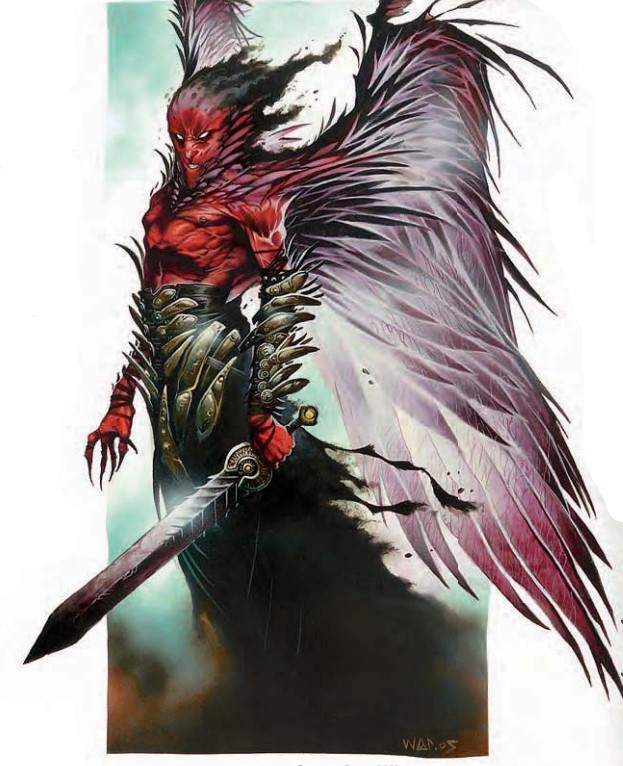

这个生物看上去像是一只长着一对灰暗羽翼的，有着猩红色皮肤的高大魔族。它宽松的长袍装饰着从倒下敌人身上获得的，锃亮的刀剑残片，暗靛青色的云气从它的头顶升起。
| 资料栏位 | 均衡杀手（Concordant Killer） 大型异界生物（跨位面） |
|---|---|
| 生命骰 | 19d8+114（200HP） |
| 先攻 | +7 |
| 速度 | 40尺 (80格)；飞行 90尺（良好） |
| 防御等级 | 39 (-1体型，+3 敏捷，+4盔甲，+4盾牌，+19天生)，接触12，措手不及36 |
| 基本攻击/擒抱 | +19/ +31 |
| 攻击 | 近战 +2均衡巨剑+29（3D6+14/17-20）或挥击+26(2D8+8) |
| 全力攻击 | 近战 +2均衡巨剑+29/+24/+19/+14（3D6+14/17-20）或2挥击+26(2D8+8) |
| 面宽/触及 | 10尺/ 10尺 |
| 特殊攻击 | 均衡巨剑 |
| 特殊能力 | 黑暗视觉60尺，昏暗视觉，真实视域，DR 10/-，SR 30；免疫 强酸，寒冷，电击，火焰，石化，毒素；阵营防御，获知阵营 |
| 豁免 | 强韧+17，反射+14，意志+17 |
| 属性 | 力量27，敏捷17，体质23，智力16，感知22，魅力24 |
| 技能 | 专注+28，交涉+9，躲藏+21，威吓+29，跳跃+12，知识（神秘）+25，知识（位面）+25，聆听+28，潜行+25，察言观色+28，法术辨识+27（对卷轴+29），侦查+28，生存+6（在其他位面+9），使用魔法装置+29（对卷轴+31） |
| 专长 | 顺势斩，精通重击（巨剑），精通先攻，猛力攻击，类法术能力瞬发（高等解除魔法），类法术能力瞬发（力墙术），武器专攻（巨剑） |
| 环境 | 见后文（未翻） |
| 组织 | 见后文（未翻） |
| 挑战等级 | 19 |
| 宝物 | +2均衡巨剑 |
| 阵营 | 总是绝对中立 |
| 进化 | 20-40HD (大型) |
| 等级调整 | ― |
同时拥有天界与魔界的血脉，这些强力存在是频繁传达神之旨意的无情杀手。均衡杀手始终寻求使它们的杀戮能力更为完美的方法，同时当没有更高位大能的指示时，猎杀它们认为值得一战的猎物。
均衡杀手使用深渊语，天界语和通用语。心灵感应100尺。
战斗均衡杀手更喜欢在进入战斗前研究它的对手，以便查明它对手的阵营并以此适当的准备自己的防御。如果可能的话，它会首先对自己按顺序施展法师护甲，护盾术，心灵障壁与高等隐形术。一旦战斗开始，当面对多个对手时均衡杀手会施放一发瞬发高等解除魔法。紧接其后的是渎神之语，律言，圣言或混乱真言，以对手阵营相应的法术为准，这也有利于评估它对手的力量。面对防御相对较弱的敌人时它使用猛力攻击专长。如果它面对一大群敌人，他会使用一发或更多的力墙术将人群分割成数量上易于掌控的几部分。如果战斗无法获胜，或者当均衡杀手被压倒时，它使用高等传送术或异界传送以逃离战斗。而且当它痊愈，准备好作战时他会归来。
真实视域（Su）：如同法术真知术；一直持续；施法者等级19。
均衡巨剑（Concordant Greatsword）（Su）：被每个均衡杀手随身携带的巨剑是它们使用者意志的延伸。均衡巨剑视为同时拥有无序（anarchic），公理（axiomatic），神圣与邪恶特殊能力。此剑可以被切开（硬度14，HP30），但如果均衡杀手放弃持剑，此武器就会消失。均衡杀手可以用一个移动动作创造一把新的剑。如果均衡杀手被毁灭，他的剑将永远消失。
阵营防御（Aligned Defenses）（Su）：均衡杀手可以增强自己对抗特定阵营生物（善良，邪恶，守序或混乱）的防御，抵挡由被选择生物发出的攻击或效果。这项能力提供均衡杀手AC上的+4反射加值与豁免上的+4抗力加值。以一个标准动作，均衡杀手可以随意改变这项能力影响的阵营。这项能力同时阻挡特定阵营生物释放的最高3级的法术，如同次级法术无效结界（CL19）。（这些防御加成未被计算到生物数据内。）
获知阵营（Know Alignment）（Su）：如同侦测混乱，侦测邪恶，侦测善良与侦测守序法术；一直持续；施法者等级19。均衡杀手可以用一个自由动作压制或恢复所有侦测能力。
类法术能力（CL19）：随意――解析咒文（DC23），高等解除魔法，法师护甲*，魔法飞弹，欧提路克弹力法球（DC21），护盾术*，高等传送术（仅自身加50磅物体）；3次/天――力场监牢，高等隐形术，魔邓肯之剑（法师之剑），欧提路克灵动法球*（DC25），异界传送（仅自身），力墙术；1次/天――渎神之语（DC24），律言（DC24），圣言（DC24），心灵屏障，混沌真言（DC24）。*已经使用。
在知识（位面）上有级数的人物可以更多地了解均衡杀手。当人物成功通过技能检定时，以下知识将被揭示，其中包括了更低DC的信息。
| 知识（位面） | 结果 |
|---|---|
| DC 20 | 这个生物是既非纯粹炼狱也非纯粹天界，而是由两种天性混合而成的产物。它的特征在两种阵营类型的异界生物间都可以找到。这个结果揭示了其所有异界生物特性。（DC原文如此，疑为24） |
| DC 29 | 均衡杀手被抵挡特定阵营生物的，时常变化的防御领域围绕着。它包括剑在内的其他能力对那些阵营偏离中立的生物而言更为致命。 |
| DC 34 | 均衡杀手的许多类法术能力与力场能量有关。这种生物也能抵抗所有类型的物理伤害。 |
| DC 39 | 均衡杀手相信他们为维护宇宙的平衡而生。他们已经成为了跨越位面追杀他们猎物的，冷血而有条不紊处理事件的刺客。 |
有人说，均衡杀手是中立神�o的实验产物――这些神�o试图创造出维护宇宙平衡的完美管家。也有人认为，它们是由一位早已被遗忘的半神创造出来充当护卫的。它们在那个任务中失败了，其主人也败于一位阴影中的对手而陨落。失去指引后，它们逐渐担当起了雇佣兵的角色。
无论真相如何，作为中立的存有，均衡杀手关注的是位面间所有力量的平衡。它们明白，击败一个强大的敌人可能会让天平向某一方倾斜。因此，它们会以群体为单位记录自己的猎杀，努力在各大阵营之间均匀分配猎物。它们将这些集会的场所严格保密，不过许多贤者相信它们会聚集在外域的中央尖塔附近。就连神�o的魔法在那里也会受到压制，使其成为秘密聚会的绝佳地点。
社会均衡杀手存在的目的就是猎杀并毁灭其他强大的生物。它们高效而谨慎，因此恶魔领主、半神乃至神�o等强大存在都争相雇佣它们去做那些见不得光的脏活。不过，均衡杀手对任何潜在的雇主都态度冷淡――除非对方能提供丰厚的报酬。
均衡杀手以服务换取恩惠，因为它们几乎不需要物质财富。有时它们在受雇时就提出这些恩惠的要求，但通常情况下，约定日后履行的契约就已足够。即便是神�o也会欠下均衡杀手的人情，因此它们可能会选择视而不见、留下一扇位面传送门敞开、提供目标下落的线索，或是给予其他有助于这些杀手达成目标的帮助。
均衡杀手不会繁殖，因此在战斗中每倒下一个，其数量就永久减少一个。任何杀死均衡杀手的存在，都会成为其愤怒同族的目标。
环境均衡杀手同时注入了炼狱与天界的本质，它们是外层位面的存在，却不属于任何一个特定位面。一个杀手可能出现在其使命所及的任何地方。
典型物理特征均衡杀手身高约10至11英尺（约3-3.3米），体重约900至1,200磅（约408-544公斤）。
典型财富均衡杀手拥有与其挑战等级相符的标准财富，约为61,000金币，但不携带钱币（用等值的宝石替代）。它们对魔法武器或盔甲兴致寥寥，因此通常会携带强力的魔杖、法杖或奇物。
阵营均衡杀手始终为绝对中立，即使在为更极端阵营服务或猎杀那些阵营的生物时，也在自身行为中追求平衡。